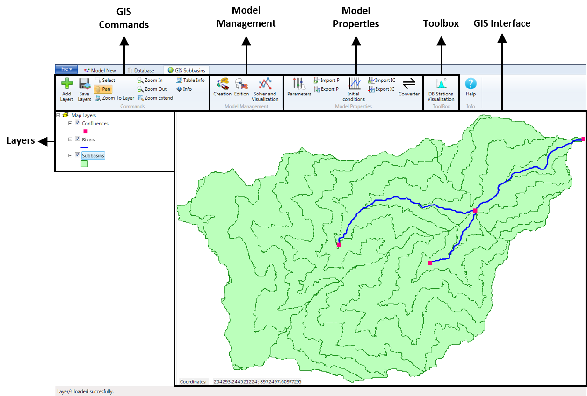
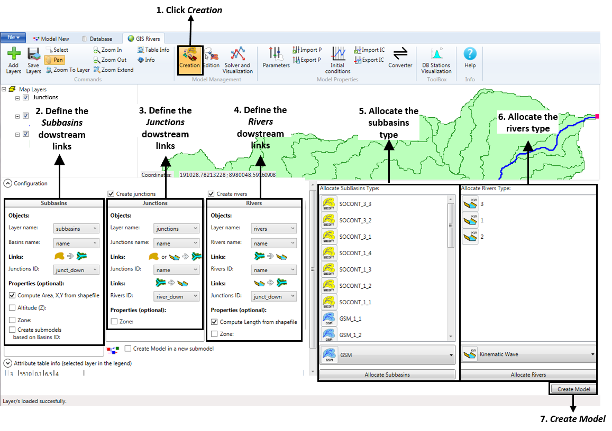
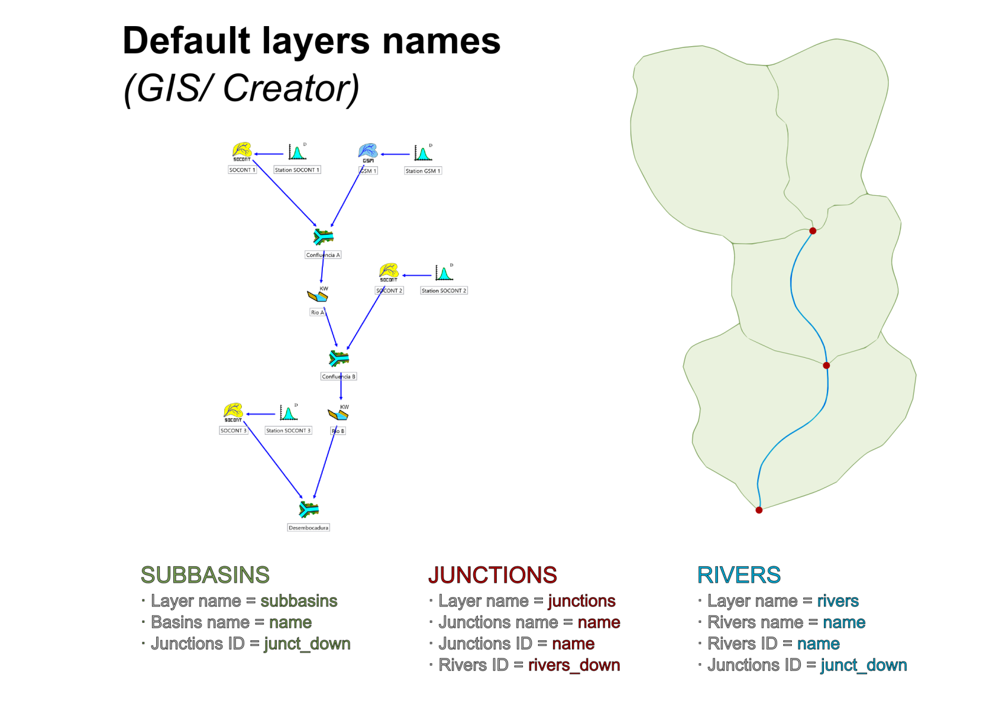
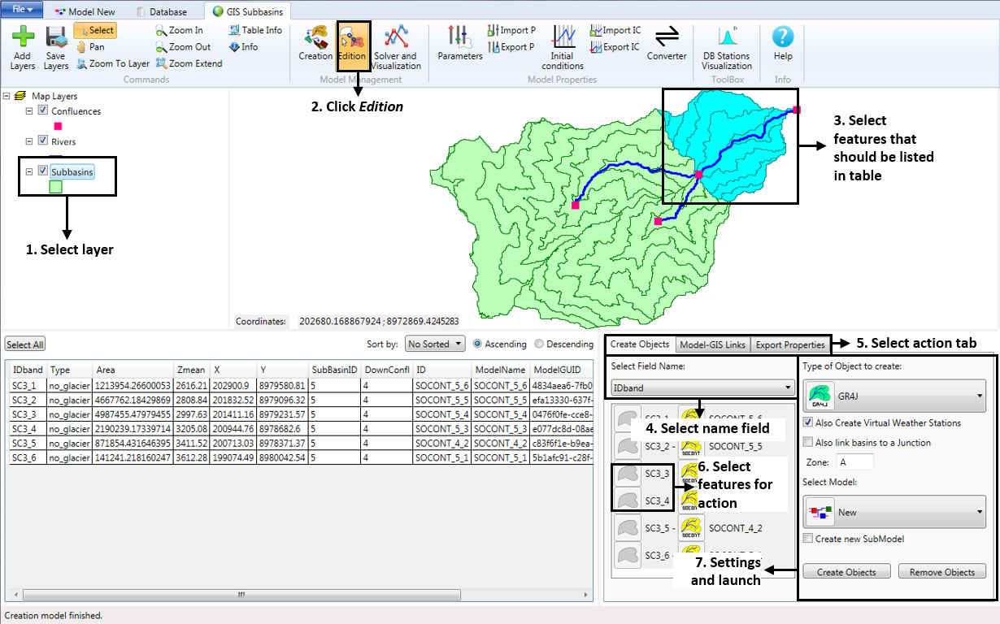
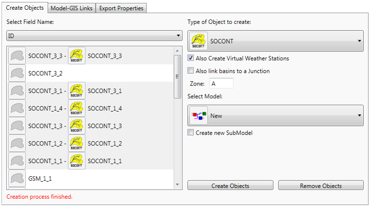
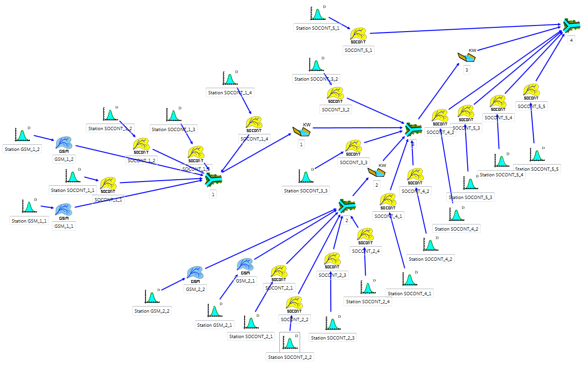
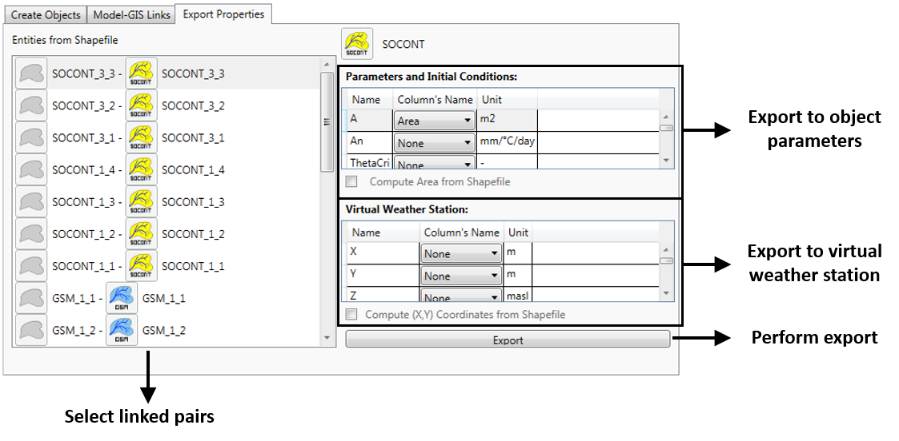
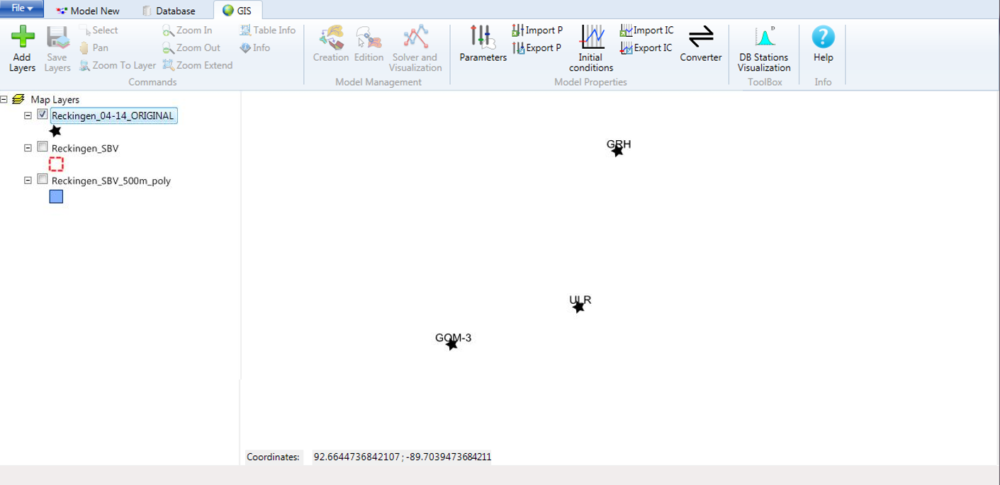

4 GIS
This document contains the User and Technical Manuals of the RS MINERVE software. These manuals are constantly updated. This version corresponds to the Software version 2.9.1.
The GIS module allows the user to manage and process geospatial data. In this chapter, the GIS interface and its different tools are presented.
4.1 GIS interface
To start GIS:
- Click on GIS section in the main frame (Figure 1). The GIS tab is shown in Figure 4.1.

4.2 GIS Commands
Importation of new layers
To add geospatial data in the GIS Interface,
Click on the Add layers button in the GIS Commands tab (Figure 4.1).
Move up/down the different layers and use the check boxes to display or not the layers.
The file path of the shapefile is added to the hydrological model (.rsm) , not the whole shapefile.
Tools for interaction in the interface
| Select features by rectangle | |
| Pan | |
| Zoom in | |
| Zoom out | |
| Zoom to layer extent | |
| Zoom to global extent | |
| View attribute table of selected layer | |
| View information on selected feature |
4.3 Automatic Model Creation
The Creation tool in the Model Management frame automatizes the creation of hydrological models based on the GIS layers where the hydrological objects, the confluences and their links are defined. This tool connects the objects (which represent the different subbasins) with their corresponding downstream junctions (that represent the outlets of each subbasin); theses junctions with the downstream rivers that transport the discharges generated in the subbasins; and finally these rivers with the outlet downstream junctions.
The structure of the GIS layers has to be edited under the following format:
The subbasins layer must contain an attribute column with the ID of the downstream junctions (the outlets of each subbasin).
The junctions layer must contain an attribute column with the ID of the downstream rivers that will transport the discharges. Also, one of the attribute columns must correspond with the ID indicated in the subbasins and the rivers layers.
The rivers layer must contain an attribute column with the ID of the downstream outlet junctions.
Once the different layers have been added to the interface, it is possible to use Creation:
- Click Creation in the Model Management frame.
A Configuration area with three parts –Subbasins, Junctions and Rivers– as well as an attribute table (for the selected layer) should appear below the GIS interface (Figure 4.2).
In the Subbasins part, select the name of the layer that contains the subbasins information (Layer name), the attribute that contains the basins name (Basins name) and the ID of the downstream junctions to be linked to the subbasins (Junctions ID). You can create submodels based on Basins ID, by choosing the corresponding ID field.
In the Junctions part, select the name of the layer that contains the junctions information (Layer name), the attribute that contains the junctions name (Junctions name), the ID field of the junctions that will be linked to the downstream rivers (Junctions ID), and the ID field of the rivers that will be linked (Rivers ID).
If you want to create river sections, choose the option in the Rivers part (Create rivers), select the name of the layer that contains the rivers information (Layer name), the attribute that contains the rivers name (Rivers name), the ID field of the rivers that will be linked to the downstream junctions (Rivers ID), and the ID field of the downstream junctions that will be linked (Junctions ID).
In the Allocate SubBasins Type, select the different subbasins entities aggregated per type by holding Ctrl while clicking (Step 5 in Figure 4.2). Choose the type of object to create (like SOCONT or GSM) and click Allocate Subbasins.
In the Allocate Rivers Type, select the different rivers entities aggregated per type by holding Ctrl while clicking (Step 6 in Figure 4.2). Choose the type of object to create (like Kinematic Wave) and click Allocate Rivers.
Click Create Model to create all the objects and their links defined in the GIS layers.

The Creation tool defines automatically the parameters \(Surface\), \(X\) and \(Y\) of the objects; the definition of the $$Z parameter is optional using the option Altitude (Z). For the definition of the rest of parameters, please use the Edition tool.
If you use the default layers names, the program will load automatically the specific fields. The names are shown in Figure 4.3.

4.4 Model Edition
With the Edition tool in the Model Management frame, the user can manually edit existing objects and links, create new ones, or remove some of them.
Once the GIS layers have been added and/or the hydrological objects have been created,
Select the layer on the left side of the GIS tab.
Click Edition in the Model Management frame.
An attribute table (for the selected entities) as well as an action area with three tabs should appear below the GIS interface (Figure 4.4),
Select features of the selected layer in order to bring them up in the attribute table (use the Select All button to select all features).
In the action area, select in the drop-down menu a Field Name (layer attribute) that should be used to identify features.

The three tabs offer you the possibility of the following actions:
Create Objects: Create model objects from GIS features.
Model-GIS Links: Link GIS features to existing model objects.
Export Properties: Export feature properties to properties (parameters) of model objects.
Create Objects
In the following example, we are going to generate a sub-model of the subcatchment highlighted in blue in Figure 4.4, which has both normal and glacial elevation bands.
Select the Create Objects action tab.
Select all non-glacial features by holding Ctrl while clicking (Step 3 in Figure 4.4). Using the sorting tool for the attribute table might help to order the objects.
Under Type of Object to create, select a non-glacial basin model (like SOCONT).
Put a check on Also Create Virtual Weather Stations. Now, a virtual weather station will be created for and linked to each created object.
Put a check on Also link basins to a Junction. Now, all created objects will be linked to a single newly created junction.
Under Select Model, select the model in which you wish to place the newly created objects. In our case, this is the parent model.
Put a check on Create new Submodel and give it a name. Now, a submodel will be created and contain all the newly created objects.
Click Create Objects.
Once the creation process is finished, a message is displayed and object icons are displayed next to each of the features, to indicate that the features and the objects have been linked (Figure 4.5).

We then create the glacial objects:
Select glacial features by holding Ctrl while clicking (Step 3 in Figure 4.4).
Under Type of Object to create, select a glacial basin model (like GSM).
Put a check on Also Create Virtual Weather Stations. Now, a virtual weather station will be created for and linked to each created object.
Put a check on Also link basins to a Junction. Now, all created objects will be linked to another single newly created junction.
Under Select Model, select the model in which you wish to place all newly created objects. In our case, this is the model that was previously created.
Remove the check from Create new Submodel, since we created our submodel in the last step.
Click Create Objects.
If we now view the hydraulic submodel that was created we see that all the SOCONT and GSM objects were created and linked to both a junction and a virtual station (Figure 4.6).

It is still necessary to link the junctions to a group interface and define certain properties of the basins (area) and virtual stations (coordinates) in order for the submodel to be complete. In Export Properties, we see how these properties can be exported by bulk from the linked shapefile features.
Model-GIS Links
It is important that model objects be linked with GIS features for two reasons. First, it allows properties to be efficiently exported from the features to the object (see next section). Second, it allows model simulation results to be viewed in the GIS (see Figure 4.9).
In the following, we explain how to remove and create a link between a feature and an existing model object.
Link creation
To create a link,
Select an unlinked feature in the link viewer.
Select a model object in the right-hand list.
Click the link icon situated below the Auto-Link button.
Link removal
To remove a link,
Select the link you wish to remove in the link viewer on left side of Figure 4.7.
Click the unlink icon situated below the Auto-Link button.

Auto-linking objects
If the object names match the Field Name displayed in the link viewer, then you can use the Auto-Link button to match and link the elements automatically.
Export Properties
Properties can be exported from a linked feature directly to the basin model or to its associated virtual weather station. There are two properties that you will definitely want to export from the GIS to the hydraulic model: Basin area and the coordinates of the virtual weather station of each basin.

Export pre-calculated feature attributes
In order to use a feature attribute as a model parameter value,
Select a linked pair of elements in the Export Properties tab.
Navigate to the model parameter that you wish to change, and in the drop-down list, select the attribute of the linked feature that should be used.
Compute properties from the shapefile
The area of a basin, as well as average X and Y coordinates, can be calculated directly from the feature itself instead of using a pre-calculated feature attribute. In order to do that,
Select a linked pair of elements in the Export Properties tab.
To compute the area for the different sub-basins, select Compute Area from Shapefile.
To compute the centre of gravity for the virtual weather station, select Compute (X,Y) Coordinates from Shapefile.
The action can be performed on multiple pairs at the same time, but only pairs of objects of the same type (i.e. only pairs of SOCONT objects). The action cannot be applied to different object types at the same time because different object types have different sets of parameters.
4.5 Hydro Model Visualization
The Model Visualization module lets you visualize and edit model information from within the GIS interface. There are three tabs for interaction:
Object Info: view and edit model object parameters.
Solver: run a simulation.
Spatial View: Change the colours of GIS features based on values from linked objects.
Shapefile features must be linked to a model object to display information
Spatial View
The Spatial View (Figure 4.9) allows you to visualize results, parameters, or initial conditions at each of the objects.
In order to perform a visualization,
Select the layer that you wish to visualize. Features from this layer must be linked with model objects.
Select the Spatial View tab.
Select the object types that you wish to visualize. Multiple selections can be made, but different object types must share a parameter in order to be displayed.
Select the parameter type from either Results, Parameters, or Initial Conditions.
Select the parameter that you wish to display.
If you are viewing simulation results, select the date for which results should be displayed.
Optional: change color settings.
Click on Visualize.
4.6 DB Stations Visualization
The DB Stations Visualization tool allows spatial representation of the stations contained in a database or a dataset.
The stations are represented directly in the GIS interface. The coordinates are taken from the X, Y and Z coordinates from the position of the stations.
Data requirements
The input is composed of a dataset or a database (RS MINERVE format).
Procedure
The steps to plot in GIS the stations’ location are presented hereafter.
In GIS, click on the DB Stations Visualization button (Toolbox frame).
Select the dataset or the database to be considered.
A new layer of points is created and displayed in the GIS interface (Figure 4.10). The user can posteriorly save the layer.
